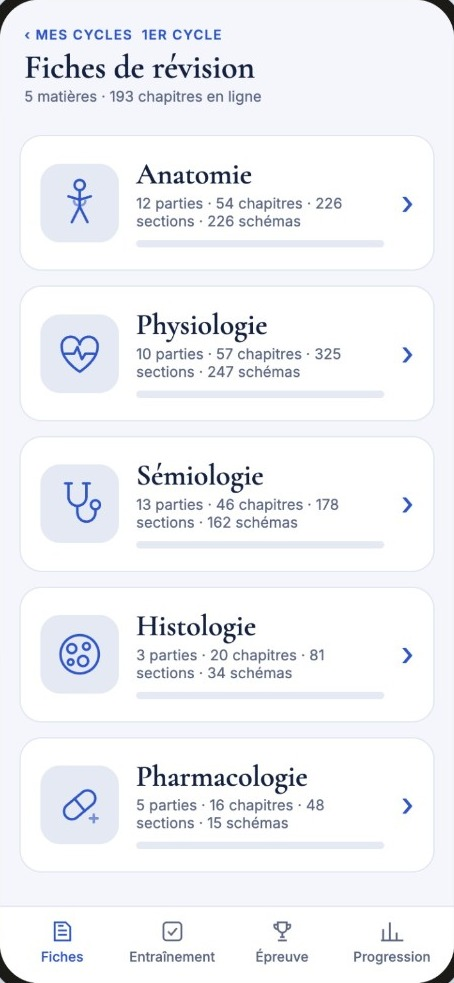
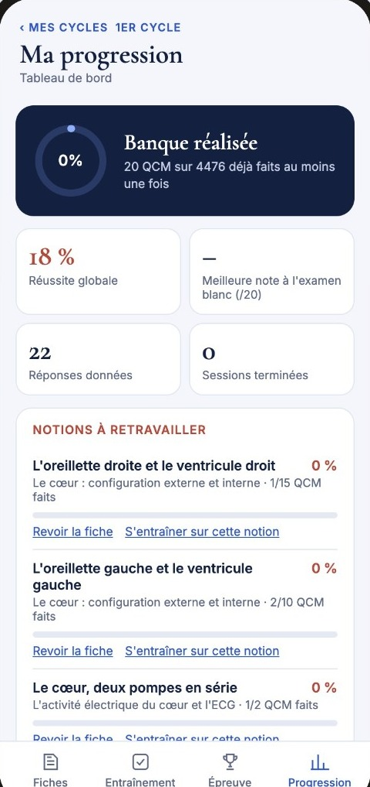

Fiches illustrées, schémas et QCM corrigés pour réviser
l’anatomie, la physiologie, la sémiologie, l’histologie et la
pharmacologie. Puis une épreuve nationale, chaque semaine, pour
savoir où tu te situes.
Chaque matière est rangée en parties, chapitres, sections et
schémas. Tu ouvres un appareil, tu lis la notion, tu passes aux
questions qui portent exactement dessus.
Anatomie
12 parties · 54 chapitres · 226 schémas
2 523 QCM
Physiologie
10 parties · 57 chapitres · 247 schémas
Sémiologie
13 parties · 46 chapitres · 162 schémas
Histologie
3 parties · 20 chapitres · 34 schémas
Pharmacologie
5 parties · 16 chapitres · 15 schémas

Fiches
Le cours, la fiche rapide, la carte mentale.
Un chapitre s’ouvre de trois façons. La fiche de cours pour
comprendre, la fiche rapide pour revoir, la carte mentale pour
tenir l’ensemble. Les schémas sont dans la page, légendés, prêts
à être revus juste avant une série.
01
Situation et orientation
Le texte du cours, section par section, sans quitter le téléphone.
02
Le schéma à côté de la notion
Projection du cœur, foyers d’auscultation, repères d’espace intercostal.
03
La question juste après
Depuis la correction, un lien ramène à la fiche de la notion ratée.
Progression
Le tableau de bord dit quoi retravailler.
La banque réalisée, la réussite globale, les réponses données,
les examens blancs terminés. En dessous, les notions à revoir,
avec le chapitre, le nombre de QCM déjà faits, et deux liens :
la fiche, ou une série sur cette notion seulement.
Réussite par notion, pas seulement par matière
Meilleure note à l’examen blanc, sur 20
Le détail suit le chapitre que tu viens de rater

Entraînement
Quatre façons de travailler une matière.
En anatomie seule, 2 523 questions sur 54 chapitres. Tu
choisis le format selon le moment : tout revoir, te chronométrer,
ou revenir sur ce qui ne tient pas.
Série libre
Tous les QCM
L’ensemble de la matière, dans un ordre aléatoire, corrigé une question après l’autre.
Conditions d’examen
Examen blanc
20 questions tirées au sort, chronométrées, correction seulement à la fin.
Sous 70 %
Points faibles
10 questions prises dans les notions où la réussite passe sous 70 %.
Banque restante
Jamais faites
Uniquement les questions que tu n’as pas encore vues, pour couvrir la banque.
Épreuve nationale · 1er cycle
Une épreuve. Toute la France. Ton classement.
Chaque semaine, 30 QCM en 30 minutes. Tu t’inscris avec un
pseudo et ta faculté. Seul le pseudo apparaît dans les
classements, jamais ton nom. Tu es classé dans ta promo et
dans ta fac.
PASS / LAS30 QCM — 21 en anatomie, 6 en physiologie, 3 en histologie.
DFGSM2 et DFGSM330 QCM sur les cinq matières du cycle.